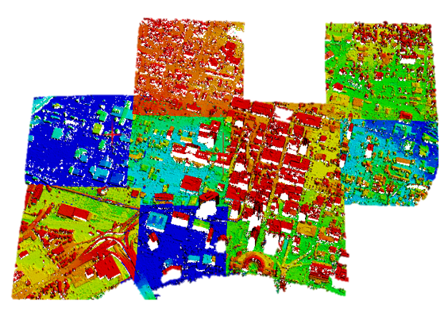

|
Ningli Xu I'm a Ph.D. student at The Ohio State University Electrical and Computer Engineering Department working with Dr.Rongjun Qin in Columbus, Ohio. At OSU, I've worked on various photogrammetry and computer vision tasks, including 3D reconstruction, 3D data registration & view sytnthesis. The processed data including satellite, airborne, UAV, street-view images and LiDAR. Email / Scholar / ResearchGate / Github |

|
ResearchI'm interested in photogrammetry, computer vision, and robotics. Most of my research is about inferring the realistic and accurate physical world from images. |
|

|
Large-scale DSM registration via motion averaging
Ningli Xu, Rongjun Qin* ISPRS Annals of the Photogrammetry, Remote Sensing and Spatial Information Sciences, 2024 (Best Paper Award) paper Enabling city-level/terrain-level 3D reconstrution by registering multiple noisy 3D data (in DSM format). |

|
Enabling Neural Radiance Fields (NeRF) for Large-scale Aerial Images -- A Multi-tiling Approach and the Geometry Assessment of NeRF
Ningli Xu, Rongjun Qin*, Debao Huang, Fabio Remondino, The Photogrammetric Record , 2023 paper NeRF vs Dense Matching? We propose multi-camera tiling technique to enable NeRF on large-scale aerial datasets and further conduct experiment to compare their geometry reconstruction performance. |

|
Point cloud registration for LiDAR and photogrammetric data: A critical synthesis and performance analysis on classic and deep learning algorithms
Ningli Xu, Rongjun Qin*, Shuang Song, ISPRS Open Journal of Photogrammetry and Remote Sensing , 2023 paper Review and evaluation experiment of feature-based and ICP-based registration methods on photogrammetry and LiDAR data. |

|
A volumetric change detection framework using UAV oblique photogrammetry – a case study of ultra-high-resolution monitoring of progressive building collapse
Ningli Xu, Debao Huang, Shuang Song, Xiao Ling, Chris Strasbaugh, Alper Yilmaz, Halil Sezen, Rongjun Qin*, International Journal of Digital Earth , 2021 paper Monitoring of progressive building collapse using photogrammetry technique. |
Awards
|
Academic ServicesReviewer:
|
|
Last updated: 05/16/2024 |